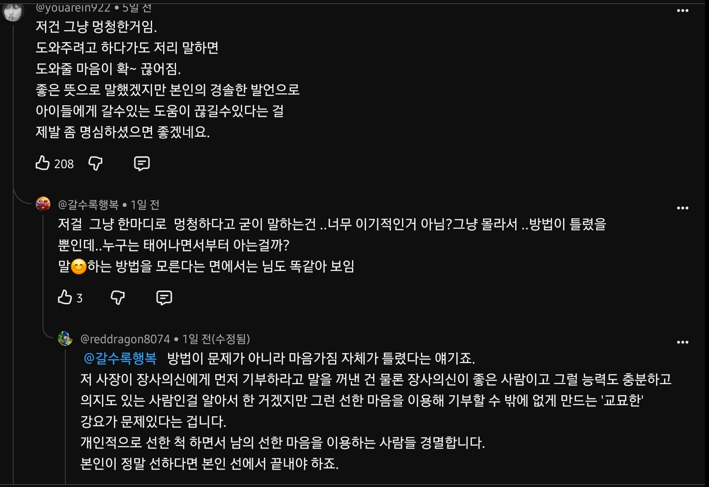

https://youtube.com/shorts/4diEyibMc7o?si=qL3QXUavZpchOyMC

기부나 후원은 본인이 여유가 있을때 마음이 우러나면 알아서 하는거지
저렇게 지인에게 기부해주세요 후원해주세요 하면
은근히 강요가 되서 가까이 하지 않게 됨...
그냥 자기가 기부가 하고 싶으면 여유있을때 알아서 잘하면 되는거...
https://youtube.com/shorts/4diEyibMc7o?si=qL3QXUavZpchOyMC

기부나 후원은 본인이 여유가 있을때 마음이 우러나면 알아서 하는거지
저렇게 지인에게 기부해주세요 후원해주세요 하면
은근히 강요가 되서 가까이 하지 않게 됨...
그냥 자기가 기부가 하고 싶으면 여유있을때 알아서 잘하면 되는거...
더 귀한 걸 했다.
햄최몇
아니 햄버거 3개나 줌?
부럽다 나도 헌혈하고싶다
뭐랴시⃫발⃫ 진짜임?
좋은일 같이하자는것도 부담이 되면 꺼리게 됨
좋은건 알지 근데 내 여건이 안되서 그걸 거절하게 되면 마치 쓰레기가 되는 느낌이 들고 하니까
그렇다고 내 여건을 줄줄읊고 자신의 상황을 다 말할 순 없는거니까
그냥 그 사람이랑 안만나는게 더 마음에 안정이 생기는 결과가 생기면 뭐 안만나게 되는거지
기부하니까 나중에 전화와서
개인정보 제공에 동의해주실거죠?
저희가 추후 진행하는 캠페인/행사 정보 제공에 동의해주실거죠 ?
이렇게 묻더라 오늘.
초록우산 그러지마라 제발
하려던 맘도 사라진다고
세금내는것도 힘든데기부하는 사람들 대단해
이게 맞지
자기랑 자기 사람 못 챙기면서 남 챙기는 건 슈퍼맨 콤플렉스임
예전에 션이었나? 왜 한국인도 힘든 사람 많은데 외국인을 도와야 하는지 물었을 때 자기도 할 말이 없었다가 나중에 한국인은 당연히 돕는 거고 더 힘든 외국인도 돕는 거라고 했던 게 기억에 남는다
기부하는 자신의 모습에 취하다보니 저래 되는건가 왜 저럼
좋은일 강요하는게 가불기라
당하면 기분 더럽긴하지
그래서 짤라낼줄 알아야됨
그냥 한번 거절해버리면 담부터 쉬워지는데
장사의신 같은사람은 아무래도 여기저기 구설수에 올라가겠지
말은 좀 험해도 사람 자체가 ㅈㄴ 진국인듯
그니까 ㅋㅋㅋ B급영상 ㅈ같은데 못끊겠음
ㄹㅇ 나이 먹으면 누가 저렇게 얘기 안해줌
자기 처신도 못하면서 남 돕는건 착한아이 증후군임
비자발적 요소가 조금이라도 섞이면 그건 기부가 아니라 ... 다른 단어로 불러야 하는게 맞음
뭐 재현하는 거임???
원숭이 어슬렁거리며 걸어와서 손 촥 내미는 이모티콘 어딨더라
구매가능일 지낫네 ㅠㅠ
내가 한 기부는 내 공이지만
부탁받은 기부는 우리의 공이잖아
내 돈으로 왜 우리의 공을 쌓지?
띠용

넌 좀 꺼져줘야겠다
신고했다 잘가라
뭐였음?
와 영상 봤는데 저 사장은 진짜 가까이 하고 싶지 않은 유형이네
좋은게 좋은거라는 식으로 사람한테 무언의 강요를 하고 있음
뭐가 문제인지 말해줬는데도 끝까지 반박하는 거 보면 사람 안변할듯..
저 사장님 근데 진짜 착하신분임 자기는 고시원 살면서 남 돕는 사람임
저 영상에서 단편적으로 말을 좀 못해서 그렇지..
뭐 이랄가능성도 있지만 선한 나에 취한걸수도있지
그건 그거고 이 일하곤 상관없지
착한분이 기부 강요를 한거네
그럼 안 된다는거야
남이면 알빠노인데
가족이면 열불나지
기업사장이 되어 고용창출 낙수효과도
사회에 이바지하는거임
이미 폐업직전인 가게사장보다
많은돈으로 사회기여중인데
너도 고기좀 사라 이말듣는것같아 불쾌했을듯
애들이 그러면 "말하는 방법을 모르는구만 끄덕끄덕" 이렇게 되지만
어른이 그러면 "말하는 방법을 모르네 병신인가" 이렇게 되는 거지
착한나 증후군임?
ㅇㅇ 혼자하면됨
누군간 보고 영향 받고 누군간 멀리하겠지
사람은 누구나 각자의 삶의 태도가 있고 삶의 방식이 있는 거다. 뭔 삶을 100번, 200번 살아본 것도 아니고 똑같이 딱 한 번 살아보는 중이면서 뭘 그렇게 단언하는 건지. 만약 당신이 유명한 유튜버가 아니고 돈이 많지 않았다면 저 사람에게 저렇게 말할 수 있었을까? 난 저런 것도 백종원씨와 비슷한 일종의 갑질이라고 생각함.
나한테 솔루션 받고 있고 내 영상에 나오고 있고 난 맘만 먹으면 어떻게든 할 수 있으니까 내 말이 무조건 진리고 참이고 들어야한다는 태도.
기부의 방식은 다양하고 상당수가 가진 거 다 가지고 할 거 다 해보고 여유 남아서 하는 사람들이 아님. 작은아버지가 기부단체 크게 하셔서 가끔 알바 뛰었었는데 보면 뭔 이런 분들이 남을 돕겠다고 나서나. 싶은 경우나 진짜 도움 안되는 데 병아리 눈물 같은 거 억지로 맡기시는 분들이 더 많았다. 그리고 이것 역시 내 작은 경험과 삶의 태도에서 나오는 거라 누군가에게 이야기 할땐 꼭 '내 생각에는'과 '난 이렇게 생각함.'이라는 말을 붙임.
즉 난 이렇게 겪어봤고 이렇게 생각하는데 당신의 판단은 당신이 하라는 뜻임.
그런데 저렇게 상대가 절대 반박하지 못할 상황에서 내 말이 맞아요 틀려요? 식으로 막나가는 화법 때문에 저 사람이 그렇게 많은 업적과 좋은 일과 성과를 이뤄내고도 안 좋아하는 사람들이 많은 것 같음.
그 기부 자기돈으로 하란건데? 강요말고
거부감 든다
기부가 아니라 그냥 단순하게 술한잔 먹는것도 내가 사주려는 맘이었는데 누가 야 니가사 하면 사기 싫어지는 마음인데 ㅋㅋㅋ
누군가가 그걸 말로 해버리면 그건 한턱 쏘려는건 내 선택이 되는게 아니라 사라고 한 그사람으로 인해 먹게 되는거지.
옛날부터 아다르고 어다르다는게 이런것을 의미하는거. 똑같은 결론에 도달한다고 같은게 아니라 과정이 중요한거지.
그치 이미 알고있지만 제대로 새겨듣게된다.
나도 못할거라면 강요하지 않는다.
나와 내 주변을 챙긴다.
다 챙기고도 여유가 있을 때 남을 돕는다.
기억해야지.
장신 ㅇㅇ 맞는말이지
나이 먹으면 저렇게 회초리질 해주는 사람이 없음.
쓴소리를 듣는 사람? 힘들지.
하지만 쓴소리를 하는 사람의 입도 쓰다.
듣는 사람에 따라 다르겠지만 나는 저 사장님의 말이 물에서 건져놨더니 보따리 달라그러는것처럼 보이기도함.
본문에 나온 것처럼 상대의 선의를 교묘하게 이용하는 행위처럼 보이기도하고. 좋은 분이니까 이 정도는 해줄줄 알았다고 말하는건.. 난 오히려 이게 더 무례하게 받아들여질 여지가 있다고 봄.
말 한마디로 천냥 빚을 갚는다는 말이 있듯.
말 한마디로 상대에게 천냥 빚을 진 것 같은 기분을 만들 수 있으니까.
사장님의 의도가 선했건 어땠던 상대가 거절하기 어려운 상황을 만들고 '부탁'이었다고 한다고하면 그게 과연 제대로된 부탁일까?
나는 장사의 신이 한 말이 과하지 않았다고 생각함.
난 기부할 여유는 없어서 오늘 헌혈하고옴. 요즘 전혈하면 햄버거 3개 주더라. 기념품으로